Turisk is located on the bank of Turia River in the Wollyn district which belonged to Poland before the Second World War and today is part of the Ukraine. The Russian Encyclopedia first mentioned the Turisk shtetl in the year 1097, when a group of Jewish families paid the the Prince of Kiev 22 pieces of gold for permission to build houses on the bank of the Turia river. The rulers were the Princes Vladimir and Vassilka. In the year 1205, Turisk was occupied by the Lithuanians. In the year 1515, King Sigismund donated Turisk to Prince Tangushka. In the year 1759, King Augustus the Third, granted the city rights to Turisk and the Jewish citizens. In the year 1765, 874 Jews lived in Turisk. In the year 1897, over 2,000 Jews were registered in Turisk. In 1938, the Jewish population of Turisk grew to over 5,500 people. On the other bank of the Turia was a suburb with a population of about 2000 Ukrainians. In the 16th century the Jews of Turisk donated another 22 pieces of gold to the Prince of Kiev for permission to build a Synagogue. In the same century a Catholic church was built in the center of the Shtetl. In 1870, a Pravoslavian church was built in the center of the Shtetl. On an island in center of the Turia river the ruins of an ancient fortress towered over the shtetl.
Maps of Wollyn District


Town community
Turisk was founded by Jews in 1094, on the shores of the river Turia. The Jewish residents dealt with rooting out the forests, and wood industry. The community grew. A jewish cemetery of the 12th century was discovered near Turisk. The Shtetl was occupied six times by neighbour countries. Parts of it was destroyed, the Jews always recovered and started new. In the 16th century the community flourished. They build a very big synagogue. Then new oppressions were imposed. The Jewish population was forbidden to live or act in the cities of the country. The oppressions caused an economical crisis to to region. Turisk suffered, and was fighting to survive. The suffering caused dreams and expectations the Messeyash to arrive… In the beginning of the 18th century, the Hassidic movement flourished. The rebe Avraham Tversky, the son of the Maggyd from Chernobyl decided to settle in Turisk. He started the the Trisker Hassidic dynsty. A very big court was build, and it brought a dramatic change to the economic situation. Hassidim from all over Poland, Ukraina visited the Maggyd, to get His blessings. Rebe Avremele Maggyd was a very well known commentator of the Torah, in the 80tees He published His study "Magen Avraham", which is a study book in the yeshivot until today. In the beginning of the 19th century the spirits of the Haskala penetrated into the circles of the yeshiva students, when Coming home they erected Zionist groups, and modernization of the Cheiders. A library was foundet, they collected books from the members homes, most of them in Yiddish. A Jewish school was foundet wih Hebrew and yiddish as teaching languages. It aroused a very strong reaction of the Orthodox Hassidim,but the progress continued. In the first world war the German army occupaied Turisk. The Shtetl was closed and isolated, the economy collapced, starvation and hunger. The Rebe with all the court left for Russia. When the war was over a group of Zionist school teachers decided to join the "Tarbut" school net,and stopped to teach Yiddish. As a result a group of Yiddish teachers lead by the writer Leib Olizky foundet a school with Yiddish as the teaching language. It devided the Shtetl into two camps of Zionits and Bundists. The first "Hashomer" was foundet and the first group of youngsters immigrated to Palestine. When they left the "Ahaluz—Pioneer" organization arouse and young Zionists man and women went to "Hachshara" places to prepare for Palestine. That was "KLOSOVA" a stone quarry, hard and dangerous work. An Hachshara place started in a sawmill not far from Turisk. Tens of yong Hallouzim from other Shtetlach were preparing for Palestine. It influenced the youth. In 1927 the Hashomer Hazair youth movement erected a "NEST" jn Turisk . The founders were students of the "Tarbut" high school in Kovel, and included the pupils of the Tarbut school. The grown up members left for the Hachshara center, Bialystock, and then started to leave for Palestine. The slogan of the movement was self fulfillment, to be a peasent in Palestine. One of the founders was Yeshaayahu (shayke) Wainer, he went for Hachshara then was enlisted to be one of the leaders of the unlegal immigration to Palestine. He became one of the leading groupe of Hashomer Hazahir in Poland. In 1939 was elected to be the delegate of the movement to the Zionist Congress in Basel. The Yiddish school was the first of its kind in all the region of 44 towns and Shtetlach. It became famous because of the level of its education. In time many of their graduates became writers and poets in Yiddish literature. The competition betweenthe parties was a trigger to culturally enrich the Shtetl. Turisk became famous because of several important personalities and events:
- In the beginning of the 18th century Dr. Moshe Marcoosi came voluntarily to practisize in Turisk over 30 years, helping the poor people, and was researching the illnesses and plagues spread among them.In 1770 he published a medicine book in Yiddish ! As a hand book for the masses. It is the only medicine published in Yiddish until today.
- In the beginning of the 18th century Rebe Avremely Tversky erected the Hassidic court and Dynasty, was famous all over Ukraina and Poland, and many countries abroad. He wrote and published a commentary study book to the Torah, which is an important study book in the Yeshivot until todaym.
- The cultural soil of Turisk was the growing area of ten very important writers and poets, Researchers and publicists. Two of the
sons of Turisk became leading persons in their movements in Poland:
- Yeshayahu (Shayke) Wainer, he was among the leading persons of the unlegal immigration to Palestine before the war.He was elected as delegate of his movement to the Zionist congress in Basel in 1939. During the S.W.W. he was in charge of the ties with the Hashomer refugies in Russia, before the war finished went to Poland to meet and help them to move on to Palestine. After the war he served as head of the Hashomer Hazair movement for three years. He was appointed to lead the struggle to free the Russian Jewry in south Amerika and U.S.A.
- Liber Brener, a teacher and leader of the Socialist Bund party in the region. Was forced to leave Turisk by the Polish authorieties. He settled in the town Chenstochova. There he Was active in the Bund. During the war was among the leaders of thr ghetto resistance. He Survived and published a study of the resistance and mytiny of the Ghetto.
The Jewish Community Life in Turisk
Since its foundation in 1097, until the Holocoaust in 1942 ,the Jews of Turisk built and developed the shtetl . The woods around it were cut down, and saw -mills processed materials, to be shipped by the stream and rivers .Trade and commerce bloomed. Skilled Jewish workers built workshops of all kinds. The Jewish population grew. In the 16th century, a very large synagogue and a" Yeshive"were built. The cultural and religious life flourished. Several times Turisk was occupaied and parts were destroyed,and rebuild. The Jews suffered,but always started again.
In the beginning of the 18th century, Turisk became a very important Hassidic center,as Rabbi Avraham of the Hassidic branch of Chernobyll settled in Turisk . Since then until the beginning of the 20th century the Hassidic rabbis of Turisk became famous all over Poland,with hundred of thousands of worshippers in many cities and even in America. Every year in the memorial week of the Magid thousands of Hassidim crowded the Shtetl, praying for help, believing in the Magids power to make miracles.
The "Hasscala" wave of the 19th century flooded the Shtetl before the end of the century.ry floaded the he 19th e miracles.din manyk .treams and rivers Beside the Yes- hiva and "Heider" a Hebrew school was built with a Hebrew library. A group of young men founded the Zionist and Youth Organization, dreaming to leave to Palestine. Some young men began studies and in a very short time started writing in time very famous..
During the First World War, Turisk was occupaied by Germany, and suffered from very harsh economic difficulties. The Rabbis residence was burned burned down. He was last Rabbi who left the Shtetl. the war was over ,Turisk became a part of Poland. The community recovered slowly, but the cultural social and political life flourished. The Bund Socialist party erected a new school teaching all the classes in the Yiddish language. This was the first Yiddish scool in our Region of 44 Jewish cities and Shtetls. I want to point out :In Turisk, nine writers and poets+ poets were born and created in Yiddish and Hebrew most of them became famous all over the world.
A new Zionist Youth Organization Hashomer Hazair trained itself to defense against Ukrainian pogroms and to be ready to emigrate to Palestine. Hundreds of them took part in the trainings,as tens of them left for Palestine.Turisk did not succeed in surviving economically The majority of were poor people and looking for ways to emmigrate, but the community continued the cultural, educational and Jewish activities. This was the situation when the Second World War started. The Russian-German pact gave east Poland to Russia. For a very short period we managed to be Russian citizens, but we, the Zionist youth were arrested, and a small group managed to run away to free Lithuania. Germany attacked Russia on the 22nd of June 1941. Only a very small group of Jews managed escape to Russia. Most of them survived the war. In two days the German army occupaiyed Turisk. The same day they started the killings in the streets. All the Jews were forced to concentrate in a small part of the Shtetl. Ten persons in a room, with no place sleep, in the worst sanitary conditions imagi- nable. Every day new ordersarrived men were forced to work in very hard conditions outside the Ghetto, in the end of the day less and less of them returned to the Ghetto. Every day new orders: to collect thousands of warm winter clothing for the German army. To collect tens of kilograms of gold for the Germans, if not, they will execute tens of citizen. More than a year of torture and killings the terrible day arrived. All the Ghetto people were forced to march towards the giant pits , of an old bricks factory. Standing naked on the edge of the pit were shotdown into the pits, by the Germans and the Ukrainian militia. The mass murder lasted till dawn. Masses of Ukrainians came to the Ghetto to rob the abandonet property. Some youngsters in hiding opened fire. They runned away calling the militia for assistance . When they arrived, the youngsters set the wooden houses of the Ghetto on fire. The entire Shtetl was burned down, only the roads remained. This was the end of the 900 year old Jewish Turisk! Only a 13 year old boy,Shmulick Boymel, survived. When Shmulik came to the edge of the pit he stood naked with mother and sisters. The shooting and killings went on and on, they were waiting to be shot.A second before being shot his mother gave him a push shouting, 'run shmulikl run! He fell into the pit ,his family was shot and fell after him. When he awoke he climbed out ,found some clothing, and ran into the nearby forrest. His survival is quite an unbelievable "story". When the war was over he met a young girl, who also survived . They married and emigrated to the U.S. Together they started a busines while raising a fine Jewish family. Working haed for years , he became a very wealthy man and newer forgot where he came from. In time they became one of the biggiest donors for the people of Israel, and Jewish communal needs in the U.S.A. We the Turiscians in Israel were not aware of it. In 1992, when Gorbachove was in power, the Turiscians in Israel collected money to erect a tombstone at the mass murder grave. While coming to erect it we saw the bad situation of the grave. Rumors among the Ukrainians told of a boy who ran away from the horrible pit and survived, lives in the U.S.A back in Israel we decided to look for help to collect funds in order to enable the renovation of the mass murder grave.
Mr.Sam Boymel donated the money for the project. With the help of local engineers the renovation succeeded. A group of twelwe Turiscians ,two generations,who live in Israel and the Boymel family with son and brother from Cinncinati U.S.A. went to the grave for the uncovery Ceremony.
During the voyage we discussed the idea to establish a place in Israel to memoriase of our Shtetl-Turisk.A place where the coming generations can come+ witness learn about their roots, about the Jewish Stetl ,its life, culture,and history.
In Israel, we were informed of a museum project by the "Moreshet "Institution to memorialise the heroic uprising in the Ghettos. The Mordchai Anieliewich Museum will become a Holocaust Study and Research Center. The exhibitions will commemorate the actions of the Jewish Youth Movements during the Holocaust, their roots in evident hundreds of the Jewish shtetla in Poland. Our shtetl, Turisk, because of its unick history for more than 900rd years as an important" sample "of Jewish life culture, and creativity, was chosen to represent all the Stetlach in Poland and Ukraina ,the cradle and soil were the youth movements grow to become the initiators and leaders of the resistance and upraising in the Ghettos. Mr. Sam Boymell made a generous donation,together with other donors. The building is almost finished. With more than half complete. Now we must fill the "shell". We the Turiscians in Israel are appeal to you-" to lend a hand" (a Yiddish saying) to help finish the very special and important project ,for us and the generations to come.
The Hassidic Roots of the Turisk Dynasty in Chernobyl
 Rabbi Mordechai, known affectionately as, Rabbi Motele, the son of the founder of the Magyd dynasty, Rabbi R. Nachum from Chernobyl brought great development to the dynasty in its golden days. Tens of thousanda of Hassidim from Russia and the Ukraine came in droves to Chernobyl to hear him speak and receive his blessing. This was the beginning of the Tversky family dynasty.
Rabbi Mordechai, known affectionately as, Rabbi Motele, the son of the founder of the Magyd dynasty, Rabbi R. Nachum from Chernobyl brought great development to the dynasty in its golden days. Tens of thousanda of Hassidim from Russia and the Ukraine came in droves to Chernobyl to hear him speak and receive his blessing. This was the beginning of the Tversky family dynasty.
Rabbi Motele had 8 sons. When he died they divided among themselves the areas of Kieve and Wollin. Each one established a Hassidic court. In Turisk, it was Rabbi Avrameleh who became the Magyd of Turisk. Among all the larger cities near Kovel, Ludmir, and Machieb, Turisk, on the shores of the Turia River was chosen as the center.
Quickly the court was established and expanded accordingly over a large area extending from the Turia River to the city and even to the Provoslavic church. Residential buildings were built, a large synagogue, and stables. Rabbi Avraham, the Magyd of Turisk wrote and published his doctrine, "Protector of Abraham." Rabbi Abraham Tversky- the Magyd of Turisk, 1770-1837
He was inherited by his youngest son who was a prodigy and learned in the Bible. It is said that in his youth he wanted to connect with prophet as he edited the Torah day and night for 1000 days and fasted for many months.
He was called the "Rabbi from Turisk". He married a woman from a well known rabbinical dynasty. Thousands of Hassidim from all over Wollin and the Ukraine came in droves to see him. On his grave a large monument was erected to receive the masses of Hassidim who visited the site.
The tradition among the Hassidim in Turisk is that on the day of his death thousands of Hassidim assembled from all over the country to commemorate his name and the entire town celebrated the event. A religious awakening and additional revenue for the people of Turisk ensued. All of the welfare services for miles around would come to lie on his grave and pray with the Rabbi from Turisk and put notes into a large box in the tent above his grave.
The Magyd's other brothers chose to live and work in other places and establish Turisk courts. Rabbi David Areleh chose to settle in the small town of Zurik. His court flourished due to the Trisker Rabbi from Zurik- the Trisker from Zurik.
The Rabbi Mashali settled in Lublin and established a Hassidic court there. He also gained much respect. In this large market town which was also had "The committee of four countries" was filled with shtibilach of Hassidim many of which were Trisk Hassidim. The court gained much glory in that time. Rabbi Volvoli relocated to a large town near Kovel and established a court at the large synagogue and droves came to him from all over.
 During the First World War the Magyd's court in Turisk was abandoned. It is likely that due to that the court burnt down and after the war was not rebuilt. However, the tradition of visiting the area where the court was on Memorial Day remains with thousands of people making the pilgrimage to his grave every year.
During the First World War the Magyd's court in Turisk was abandoned. It is likely that due to that the court burnt down and after the war was not rebuilt. However, the tradition of visiting the area where the court was on Memorial Day remains with thousands of people making the pilgrimage to his grave every year.
Shtibilac, a small synagogue of Turisk Hassidim was established for hundreds in eastern and western Poland as well as in New York where there are two courts (descendants of the Tversky family). Their activity continues to this day. In Jerusalem as well a shtible was founded. It is said that between the two World Wars 8 courts were active in Poland. Tens of thousands of Hassidic believers! Holocaust survivors also tell of how many remained true to the Rabbis of Turisk even to their deaths.
The development of Yiddish language and culture In the Shtetl Turisk
Yiddish was the most spoken language among the Jews in east Europe (Poland, Russia, Ukraina)during the last three hundred Years. A widespread theory- assumption tells that the earliest Yiddish writing in Hebrew letters started in the midst of the 18th century. In those years in Turisk was operating the physicist Dr. Moshe Marcoosy. He has done a very serious job in changing the attitude of the Jewish population towards hygienics and medicine. Working as a physician for many years, among the poor population he acquired practical knowledge. He investigated the than popular diseases and epidemics. He was very popular among the Jewish and general population, and good relations with the Authorities and nobility in the region. After many years they supported him to enable to publish a medicin hand book written In the Yiddish language in Hebrew letters for the use of the poor. This was the only medycin book written in Yiddish ever.
The book was published in 1770. According to the a.m. assumption and also researchers of Yiddish this book was among the first published Yiddish books in Hebrew letters. Only two or three samples of the book can be found in libraries (Bar ?lan and the national library in Jerusalem) As of the middle of the 18 th century Yiddish literature is published And spread in the eastern regions of Poland ,Russia and Ukraine.
Some interesting facts are telling us that Yiddish printed books were Spread and read in Turisk.
From the middle of the 19th century and the beginning of the 20th century groups of young" Yeshive" graduates erected a modern Cheider, they stuied , beside religion "tora" also mathematics, Hebrew,and Yiddish. When the first world war ended, they opened In spite of the Hassidim opposition, a Jewish school, with Hebrew and Yuddish as teaching languages. They choose a committee to Open a library. Books were collected from house to house,mostly Yiddish but also Hebrew books.
The split among the school teachers.
When the Zionist group decided to Join the "Tarbut" school organization, a group of teachers with the writer-teacher Leib Olizky decided to split and to found a separate school, with Yiddish as the teaching language. Leib Olizky donated his late grand fathers house to enable the opening of the school. This act divided the Jewish community into two opponent camps. The leaders of the Yiddish teaching school aimed their efforts towards the children of the weak part of the Jewish community. Mostly children whose parents could not afford monthly salaries, Therefore they attendet the free of charge Polish school,or studiet in The cheider. During the beginning period they managed to convince Families of skilled workers and proffesionals, paid only partly Yiddish was their spoken every day language, they loved it, and when the school Joined the "Zisha" school net, it became a success. The school was under the influence of the Socialist Bund Party.
It was the first Yiddich school among 44 towns and Shtetlach in the Wollyn region. About 150 pupils attendet the school, in spite of the poorness, The school flourished, the studying standards were on a high level. The graduateshad no problem to continue studies or find a job in partime teaching. Tey went to bigger cities to study, very soon they started writing Yiddish poetry or books ( tales, romances e.t.c.) The shool became the battle field between the Bund party and the underground Communist party. The Polish Authorities could not afford it, and caued many difficulties to the Leading teachers. Leib Olizky left for Varsaw ,he became a very Considered Yiddish writer. In his absence the situation of the School worsened ! A change for better occurred!
The 1st of September 1939! The Soviet army entred Turisk as part of the German-Russtan pact. Leib Olizky came back to be a teacher in the school. It lasted less than two years. The soviet authorities shut down the Tarbut" Zionist school and The Hebrew library. All the Zionist organizations were forbidden By law. The Zionist youth activist were "asked" to join the Communist Comsomol. Zionists activities went underground, Some left Turisk to prevent arrests.
From the beginning of the 20ties Yiddish language has a rejuven- -ation. The Yiddish library grew very fast. In those years the best of the foreign Literature were translated to Yiddish, and enriched the horizon of the fellow-members of the library.
With the foundation of the Culture-Ligue club the cultural activities gained momentum, a Yiddish amateur drama club was founded( in addition of the existing Hebrew club) It happened ,when Yiddish club performed a foreign piece translated to Yiddish, the Hebrew club performed a Yiddish piece in Hebrew(of Sholem Aleichem, Mendely,Perez) a wonderfull competition it was, and a successfull One. The Bund party was very active in organizing political-litera- ture evenings. Several times a year, the club choose a book for this purpose, the club members were asked to read it,and prepare for a public trial. Many such public trials ( with a political meaning) took place, in Yiddish by both sides. Each one trying to convince the public. Such was the public trial on the famous Perez tale : "Bonche Shwaig" the Bundist prosecution accusing the public of being passive e.t.c. So called cultural evenings took place every week, reading poetry, musical evenings. The Culture Lige club also invited famous writers and lecturers to trisk to lecture and discussions. It was a big holiday almost a festival, when the poet Zoosie Weinper, who was born in Turisk,on a lecturers trip to Europe ,arrived for a long visit. Both sides were very proud of Him, the famous Turisk born American writer. The Yiddishists Him being a Yiddish poet. The Zionists because he was an Active Zionist who even volunteered to join the Hebrew Battalion In Palestine to figth the Turkish Empire. In one of the meetings on the Turia shore he told the audience of his experience during the war. He also told about his feelings and experience while visiting the Jews in many countries and cities in Europe. With tears he read an allegory song concerning the Jewish fate in Europe." Of a dreaming shepherd with a heavy stick, that was not avare of the nearing danger, although the sheep were mooing. The end we know. The song had already a melody and he sang it. Almost a prophet.
Many lecturers and writers came to Turisk,but nobody, beside Zionist were warning of coming. The hopes of the twenties, overturned to a disaster in the end of the thirties . In 1942 the Jewish people and culture in east Poland,Ukraine and Russia Were inhiliated, nobody stretched out a hand to help. The Shepherd with his stick did not awake!
Community Activists
Yizhak Greenshtein
Chairman of Community Comity of Turisk
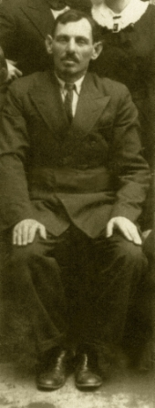 Yizhak (Iche) was born in Turisk in 1882 to his parents Idul and Riva-leah. A six children family Yizhak among the youngest. His Father Idul was a man of the world,and a businessman, wandering to South America, Europe, and many other countries. When he came back toTurisk, and settled down, it provided him Respect of the Turiscians, Jews and others. Two of his sons left For South America, but Yizhak, who was very talented , started a successful food business, became partner of the big flour mill, and other business. He married Ester,and they gave birth to seven children. Yizhak was among the first youngsters who initiated the erecting of the "Tarbut" school, the Hebrew library, and all his children attendet and studiet there. His branchet out busines brought him wide influence among the community members, specially among the masses of craftsman, handiwork Jewihs people, who were the majority in Turisk. He became the most important arbitrator and honest broker to them. This position contributed in the elections as the chairman of the community comity. He was elected three times, He enjoyed exelent relations with polish authorities, for the benefit of the community and the people. He was happy, four of his children managed to leave for Palestine in time. He shared the fate of all the Jews of Turisk in September 1942.
Neta Wainer
Head of the community of Turisk
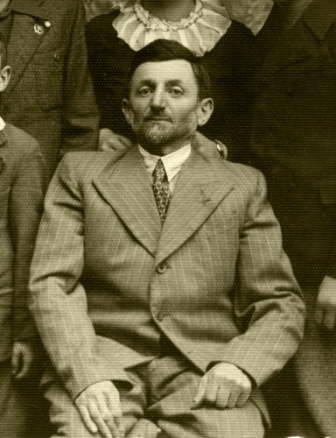 Neta Wainer was born in Turisk in 1882 to his father Yeshaayahu and mother Reisel. His grandfather was one Of the gabbai,s in the "Magids court".He ovned a small brick factory, for his living. His father Yeshaayahu took to the factory managing,there were "rumors" that He is not a Hassid any more. Neta went to the "heider", continued studies at the Yeshiva of Lublin and graduated as "Rav." When his father passed avay Neta returned home, to manage the bricks factory. While home he joined a group of youngsters,Yeshiva graduated, influenced by the Zionist and progressive ideas, aspirations to modernize the community life. When getting married in 1909 Neta with the others initiated the errection of a school for Jewish children with teaching languages :Hebrew and Yiddish. The orthodox leaders proclaimed a boycott on them,they were forced to build a new "Zionist " Synagogue. This was how he started his social activity. After the Polish occupation, the "Kehila"reorganized and In 1924 he was elected head of the "Kehila,"and served with intervals three terms. He was the initiator of the idea to join the "Tarbut" Zionist school net, to impose the Zionist upbringing, the founding of the Hebrew library. During years he supported financially the Hebrew school. During years Neta was among the organizing the social activities in the "Kehila."In the beginning of the thirties the bricks factory was burned down, with no chance to restore the factory.The six Wainer children who spoke Hebrew, and were members in Hashomer Hazair and dreamed to immigrate to Palestine, all beside one of them remained in Turisk. Neta Wainer his wife Pessia ,daughter shoshana and the two youngest sons Simon and Pesach were killed In the Holocoust in 1942 together with all 5500 Turiscians.
Avraham Shiye Bar
Chief slaughterer in the Shtetl Turisk
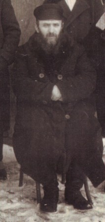 Avraham Shiye was born in 1881 in Turisk. He was the son of Of a slaughterer family in generations.His father Pinie(Pinhas) Was a slaughterer in Turisk when his father passed away. Avraham Shtye attendet the yeshiva in Turisk, specialized in the trade, and moved to the Shtetl Kashyvki. He married Hana of Torchen. Than he was given the Job of slaughterer in the city Kostopol. There he served several years, until asked to accept the job in Turisk. Avraham Shiye was an orthodox Jew. In spite of it he did not prevent his sons and daughter to be active in the Zionist and Hashomer Hazahir organizations. During the years of Soviet rule, who hated Zionism, his house Became the center of the Zionists underground, His wife Hana, Cooperated with the underground. They were killed in September 1942 while sharing the fate of all the Jewish community of Turisk.
Yeshayahu (Shayke) Wainer
From Shtetl Turisk to a Leader of Hashomer Hatzair
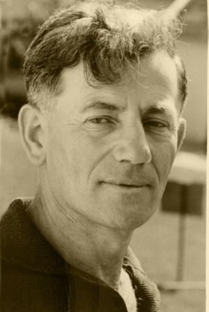 Yeshayahu Wainer was born in Turisk in 1912. The members of the Wainer family were: the father Neta, the mother Pesia, one daughter Reisele, and four sons, Moshe, Ben-Zion, Shimon and Pesach. The parents were religious, but liberal people. Before the First World War in 1910 the young industrialist Neta Wainer together with some other young Jews founded a Yiddish and Hebrew school. Shayke was among the first to attend a school that was not a traditional cheider. When he graduated he entered the "Tarbut" Hebrew high school in the neighboring town Kovel. Kovel was an active Zionist Center. Several Zionist youth Movements such as, the Hashomer Hatzair, Hahalutz, Beitar and others called people to join the movements to immigrate to Palestine.
Shayke joined the Hashomer Hatzair movement together with many other students and became a leading figure in the movement. When he was home during vacation he managed to organize the pupils of the Tarbut school in a self-styled "Nest" of the Hashomer Hatzair organization. Soon it became the largest youth organization inTurisk. Shayke was very active in the region Groups were organized in the large cities. They trained themselves to became workers in factories, agriculture, and other trades in order to prepare to be Pioneers and members of Kibbutzim in Eretz Israel.
When Shayke graduated he returned home and waited for a new group which was being established in order to join them. Meanwhile he was the leader of the Nest in Turisk. In the meantime he started teaching in the "Tarbut" school, which lasted for almost two years. Then he joined his "Achshara" or training group. After several months he was sent to the headquarters of Hashomer Hatzair in Warsaw. He visited the Achshara groups all over Poland on behalf of the movement headquarters helping to choose the people most suited for the difficult journey and conditions on the Kibbutzim in Israel. During this period he was acquainted with thousands of members in the movement and well-known among the Zionist and Bund activists in Poland.
The British authorities denied immigration certificates for most of those trying to enter Palestine. Shayke was among the Pioneers of the illegal immigration. He organized train convoys with hundreds of "Pioneers" from Poland, Italy, and Romania to board small ships for the difficult journey. Shayke escorted the convoys and was like a father to them as he listened to their problems trying to solve some of the problems. He continued this work for over two years.
In 1939 Shayke was elected as the only Delegate of Hashomer- Hatzair to the Zionist Congress in Switzerland. He left Warsaw a week before Germany invaded Poland and while attending the Congressional discussions for eight days the war started. All the delegates rented a boat and sailed for Palestine but Shayke and two other Youth delegates decided to return to Warsaw and remain with the movement in the hard times as Warsaw was under siege and thousands were killed or wounded. The Polish authorities ordered all the young people to leave Warsaw.
All the members of the "Hanhaga" (management) headquarters who stayed in Warsaw recruited hundreds of activists and started the heavy bombarded toward the new Russian border. They walked for two weeks under bombardments, but when crossing the Russian border new problems arose. The N.K.W.D. was chasing Zionists and arresting many of them so they stayed in hiding when Russia turned over the Vilna region to Lithuania. It was their chance to move toward Palestine. Shayke and the leading group went secretly to Vilnius. Almost all the leaders and activists of the Zionist parties in Poland were there numbering about three thousand with a thousand Hashomer Hatzair activists. The leadership decided to send a group of very able and experienced activists to the Warsaw Ghetto. Shayke volunteered for this mission but this time the leadership refused his request. Mordechai Anielevich and Yosef Kaplan and several other activists were sent instead. The leadership started sending people to Palestine with false documents. Several hundreds made it and Shayke was among them. He arrived in Palestine at the end of 1940. He went to live In Kibbutz Messilot with his original "Hahshara" group from Poland.
At Kibbutz Messilot he met Hannah and several months later they married and settled in Kibbutz Ein Hashofet.
When Germany invaded Russia many of those who remained in Vilna escaped to the Russian army and eastern Republic of Russia. Shayke was knocking on every door in an attempt to convince the Kibbutz leadership to hurry and save the members in located in the Asian Republics.
Shayhke left his new wife and volunteered to join a working brigade to Teheran. There he succeeded in making contact with many activists who survived with victims. He managed to convince the "Joint" Fund to support the efforts and help the refugees in eastern Russia. Thousands of food parcels were sent to them. After the war most they spoke of their gratitude as those the parcels saved their lives. After the Teheran mission Shayke returned to the family and Kibbutz. He began teaching in the Kibbutz school while enjoying his family life. When the end of the war was near Shayke was asked by the "Hagana" to secretly leave the country for Poland to meet and organize the returning Jews who started to leave Russia for Poland. Many of them were surprised to see him again and they joined together in organizing the masses of refugees starting the march to Eretz Israel.
Once again he was among the organizers of the "Exodus" of Jews from all over Europe to Eretz Israel. Hundred of thousands of Jews on their way, in spite of the British Empire attempts to stop them. Back in Israel Shayke was called again to join the leading central members of the Hashomer Hatzair abroad and became the secretary of the management of the Hashomer Hatzair World Organization.
After finishing the mission Shayke was appointed envoy and leader of the organization in Argentina. He succeeded and lived there four years (with his family). After a short time in the Kibbutz he was appointed as diplomatic envoy in Argentina regarding- "To let the Soviet Jews Go. Shayke was soon well known in the intellectual and leading circles of Argentina and many South American Countries. His activities were valued by all those whom he worked with
After two years of exhausting activity Shayke fall very sick. He was forced to stop all of his activities and returned home and after several months he passed away.
Yaacov Sheaps
A central activist of Kibutz Hameuchad.
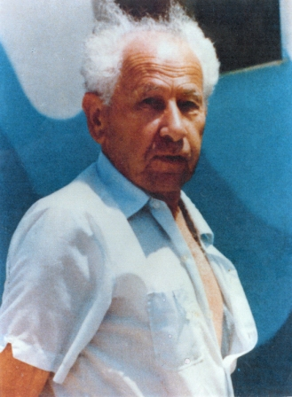 Yaacov Sheaps the son of Golda and Michael Sheaps was born Turisk in 1910. The were a wealthy family,owned a small factory To extract flax oil and to produce flax linen and animal food of olive peel. They raised five children. The family was religious traditional, but not Hassidic, as most of the Turiscians. The spoken language at home, was Yiddish. All the children attendet The "Tarbut" school, where the teaching language was Hebrew. Yaacov attendethe Heider then high school. The hachshara movement influenced the high school pupils, While in the 11th grade at the age of 17teen, together with his best friend left school to join the Klossova Hachshara point. It was a very hard stone quarry, he suffered of hunger, sicknesses, the quarry was a primitive plant. And human losses. But Yaacov remained three years. In 1930 they left for Palestine, joined Kibutz Givat Hashlosha, the center for all the Klossova Olim. He worked in agriculture, in 1933 Yaacov became the first truck driver of the Kibutz until mobilized to became an officer in the British polis Force. After graduating the polis school in Jerusalem, was appo- Inted to serve as policman-rider in Hadera. It was the beginning of the bloody riots of 1936. In 1937 Yaacov was nominated as accompanist to prof. Hayim Waizman, president of the world Zionist movement. With H. Waizman Yaacov participated the Zionist congres in Basel, in year 1939 before the war. Back in Palestine, he married his Hadera girl friend Dora,together they Joined and became members of Kibutz Givat Hayim. He became menaging director of the transportation Cooperative, Emek- Hefer, one of the first and largest transportarion cooperatives in Israel. After several years of service he was called to join the management of the building company of Hakibutz Hameuhad and Solel Boneh. And lead the giant swing of building in the Kibutzim. When Dora passed away Yaacov returned home, trying to work, he fall sick, and died in 15.9.90.
Hershel Sthearb
A social and culture activist
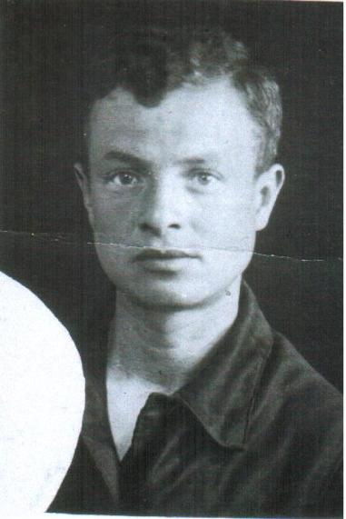 Hershel Sthearb the eldest son to his father Sucher and mother Hana Sthearb, was born in Turisk in 23/12/1915. a family of seven Children. The father was a tailor and well supported his family. He was a taylor who provided ready made cloth. The family was religious but not orthodox. The father was among the first parents to send his children to the "Zisho"school. Hershel like all Jewish kids atendet the Heyder. He was very talented and arouse expectations when graduating continued study while working in his fathers workshop. He became socially involved and very active culturally among the youth of the Bund. His vigorous activities arouse by bad mitake suspicions of illegal anti Polish activities. Hershel was arrested and sentenced to many years of prison. He was sent to the worsiest concentration camp"kartusa- Bereska." There he was given to tortures, hunger and diseases. In September 1939 when the Nazis invaded Poland, he was freed and returned home very sick. When the Red Army took Turisk Hershel became again active , but the good times did not last long. In june 1941 the Nazis attacked Russia, the defeated Red Army retreated, and masses of citizens followed.. The father Sucher bought two horses with a cart,all the family some other Turitians with them started the long and terrible march to the east. Day and night the Germans bombarded the ways, many were dead and wounded, no food and sickness, the horses could not continue, they walked and found a human who allowed them to join the train,till arriving to a kolkhoz in Uzbekistan. The family stayed there till the end of the War. Hershel survived very ill. When the war finished, Hershel with united family left for Poland. From there they immigrated to Israel. Hershel could not integrate and went with his wife and children to U.S.A. There he lived until the last day of his life. According to His last wish, His family brought his body to Israel. He was buried in the Moshav Kfar Boruch.
Yaacov Sheaps
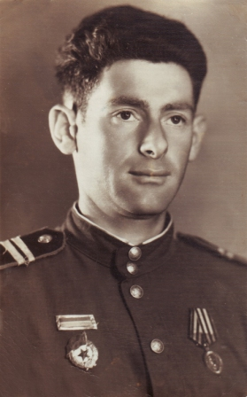 Was born in Turisk in 1921. His parents- father David his mother Reizel' were a laboriously family. His father was a high Skilled builder. His mother was a seamstress, and instructor of The trade, to young girls. As a child Yehezkel attendet the heider and then became a student to the "Zisha" Yiddish school. After graduating became apprentice and worker, joined the Jordan group of Hashomer- Hazair, and was very active. Several monthes after the Russian occupation he was mobilized to the Red Army. Since The first days of the Nazi invasion he was fighting on the front. 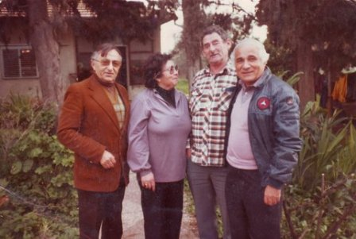 He was heavy wounded, more than six months in hospital While still wounded, returned to the unit on the front, continued Fighting until the Victory day. He was decorated with several marks of distinction, among them, the important Red Star. When the war finished he immigrated to Palestine and became member of the Moshav Kfar Baruh. He was a farmer, he loved the trade, and lived there with his family, wife, two sons and daughter till his death in 1991. His son Shmulik dyied while serving in ZaHAL.
Yaacov Shcherb
A central activist of Kibutz Hameuchad.
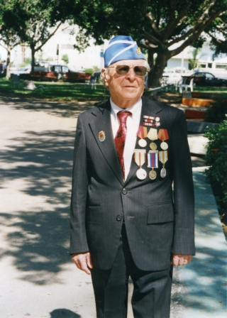 Yaacob was born in Turisk in 1920, by his parents Yesoscher and Mother Chaya. His father owned a tailors shope, and was a well known specialist in the trade. All the family was engaged in production and enabled a reasonable living. They were a family of five children, while the oldest son Joined the underground Communist party, all the children attendet the Yiddish "Zishool". When Yaacob graduated, he began to study the family trade, and Joined the Hashomer Hazair, to 'kvuzat "Jarden". He soon became very active and one of the best members. When the Soviet union occupaied Turisk, he joined the underground of the Hashomer Hazair groups. After several months he was mobilized to the Red Army. When the Nazis invaded Russia, he was moved to the Leningrad front under siege. He fought for more then four years, was heavily wounded, remained there, in very hard sanitary conditions, poor medical assistance, lived through terrible war experiences. Was moved to the rear, there, he joined his family in refuge. When the war finished he moved back to Poland, Germany and came to Israel. He married and gave rise to three children. All the years he suffered of many illnysses, he remained Handicapped. He passed away in 2006.
Creators
Baruch Olizki
Poet
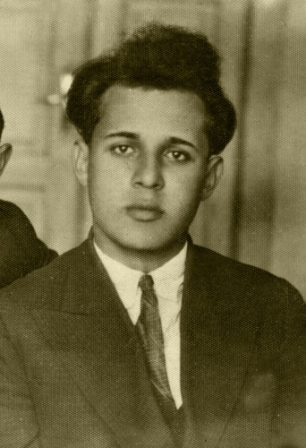 Born in Turisk in 1907, Olizki's parents and family were religious yet liberal people. Baruch Olizki attended the cheider. Both his father and mother passed away when he was a very young child. Baruch was adopted by his uncle Simcha Olizki who brought him to Ratny where he lived. In Ratny he attended the Zionist school and studied in the Hebrew language. When he returned to Turisk as a young man, he suffered from hunger because of the difficult economic situation. In order to survive he became a teacher of young children in a small village. After a short time he married Sarka, a daughter of a rich family and soon a son Monik was born. With support of Sarka's family they opened a grocery store. Because of economical problems they had to close the store and Olizik became a teacher in the "Zysha" Yiddish school were he won the admiration of his pupils. He loved children and they loved him. He had a modern pedagogic approach for the times and was especially devoted to children from poor families whose life experience he could relate to. He later divorced his wife and was forced to separate from his wife and son. His first poem, "My blood is Mixed" was published in a journal titled, "Pages of Literature" in 1925. In the early 1930's Olizky arrived in Warsaw where he remained jobless, suffered hunger, but became a productive poet His poems and tales were published in almost all the Yiddish Periodicals in Poland. He remarried a former pupil. They lived in Lodz were he became teacher of Yiddish in a "Zisha" school. His wife was a librarian. During this period he was very prolific and his works were published all over the Yiddish speaking world. His work from the years 1936-39 have been collected. 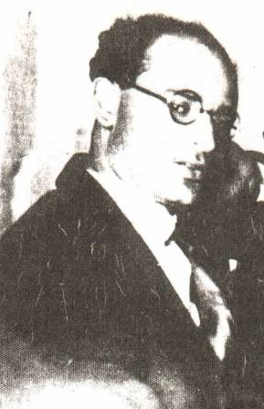
When the Germans invaded Poland, in September 1939, Olizik and his family fled to Turisk. He became a lecturer at a Soviet high school in Grodno. The sudden German invasion of Russia in1942 caught them by surprise and they tried with no success to flee. Sadly, they perished along with the rest of the Jewish population. After the Second World War ended the brothers-writers Leib and Matys managed to collect a part of his works, in a book they titled: "My Blood Is Mixed".
Matys Olizki
Poet
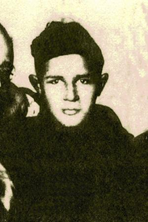 The poet Matys Olizki waas born in Turisk in 1915in a traditional, but liberal family. He was the younger brother of the writer Leib Olizki and Baruch Olizki. By the end of the second World War, he attendet the "modern cheider" Where there studied also mathematics and languages. He Was very talented. As a young pupil he secretly read general literature. When the first Jewish school was erectet, and Hebrew and Yiddish became studying languages he was among the first to study there. In 1926 When the Zionists decided to be a part of the "Tarbut" network, the "Bundists" founded a separate school. With Yiddish as the teaching language and Joined the "Zisho" Network. Leib Olizki became the headmaster, so Matis joined the new school for good. After graduating he studied and finished the teachers seminar of the "Zisho" network. Soon he began to write and Poetry for children And publish in childrens newspapers , study books for children and collections. In September 1939 when the Soviet army took Turisk, they ordered to shut down the Hebrew school and all the Zionst institutions. Matys became a teacher in the Yiddish teaching school.
When in June 1942 the Germans invaded Russia he joined a group of Jews to leave Turisk with the retreating Soviet army. When, after a long and risky journey they came to Kirgizistan. During the years of the war he was forced to work hard labor, he fall sick for monthes, and Sonia was keeping wath at his bed. They got married, and when the war finished the went back to Poland. With his brother Leib and other intellectuals they tried to resurrect the Jewish culture in Poland, Matys Olizki managed to publish two collections (books) of poetry.After a short while they left for occupaied Germany,living in a camp of displaced refugees. There he continued to write and publish his works. In the early fifthies they immigrated (Matys,Sonia and son) To the U.S.A. and settled in N.Y. He continued his work and published his poetry, stories in the Yiddish newspapers and Journals. For his living he is continuing partly to teach. Three of his collections were published in Israel. According to his friends he lives now in a nursing house in N.Y.
Leib Olizky
Yiddish Writer and Poet
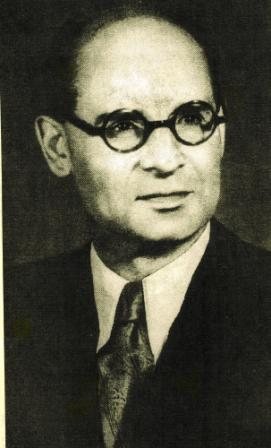 L. A. Olizky a writer, poet, tales, fables in Yiddish, and translator to Yiddish of works from Russian and Polish literature. He was born in the year 1894 in Turisk, Region of Wollyn Poland today Ukraine,his parents were Ortodox Jews.The three brothers were brought up religious,but open minded. L.Olizky attendet the "Cheider", finished a Yeshive, where he studied also, general studies and languages, s.a.Polish, Polish literature and Russian. In Turisk he became the mainstay of "Zisha" Yiddish school. It was the first school in the region to teach in Yiddish. Later only one more Yiddish teaching school,was foundet in the region there he brought up and educated generations of students in the Yiddish culture. He was among the initiators of the "Culture Association", the Yiddish library,and the Amateur troup Yiddish shows. Yiddish culture flourished, thanks to L.Olizky and his brothers. Turisk became famous all over Poland as a castle of Yiddish culture. Leib Olizky started to create in Yiddish as a youngster,in the beginning of the 20 th century. He wrote his first novels and tales under the impression of the events, and suffer the community went trough in the dark years of the first world war. In the thirties he went to Warshaw the capitol of Poland, the center of Yiddish culture. Soon He integrated and was among the most popular and valued Yiddish writers of that time. Thanks to his talent many young writers joined in the Yiddish activities.
In the years of His being a teacher He continued to create: Stories for children, He published a book of fabls for children. in those years he ttanslated Adam Mizkiewich and Ulian Toubin From Polish and Poushkin and the Fabls of Kirilof,from Russian when Germany invaded Russia,He fled with his family to east Russia, the Bashkiry Republic, working hard labor from1942 till 1945. L. Olizky joined a staff of military hospital, till the end of the war. He returned to Poland, trying to continue his work. With hopes to be a part of Jewish intellectuals who tried to start a new Jewish community life in Poland. Very soon He understood that it is an impossible task. In 1959 He left with his family to Israel, living and creating in Givatayim near Tel-Aviv. L. Olizky wrote and published over forty works, tales, Novels, Poems etc. Only three of his works, were translated to Hebrew. Baruch Olizky ,the brother of Leib,a writer and poet was killed by Germans in the Holoccaust. Matys Olizky the youngest brother of Leib, a poet, survived the holocaust in Russia. He wrote and published a number of Poems, songs for children. Lives and still creating in the U.S.A.
Liber Brenner
One of the "Bund" Leaders in Poland
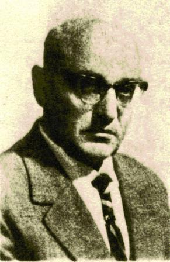 Liber Brenner was born in Turisk in 1901. His father was a "Gabay" in the court of Rabbi Mordah's son. His mother owned a small flour shop and the family was very poor. Liber attended a "cheider", however, when the First World War surprised them the family left Turisk to settle in the town of "Zwoohil" in Russia where he attended a Russian High school. When the war was over the family returned to Turisk. The economic situation was very bad and Liber helped his family by giving private lessons to school children and also taught in the Hebrew school.
He was among the founders of the "Zisha" school with Yiddish as the main language. He was the most devoted teacher and beloved educator. He became very active in the "Bund" Socialist Party.
The Polish authorities could not understand the differences between them and the illegal Communist party and the invested time and effort in attempts to stop his activities. In 1929 he moved with his family to a bigger town by the name of Chenstochov in western Poland where he was appointed as a lecturer of literature in the Perez school and also a lecturer in the cultural circle of the Cultural League.
From the year 1934 until the beginning of the Second World War he served as president of the TOZ, a project to organize summer camps for children of the working class.
In 1936 the Polish authorities prohibited Brenner from teaching because of his political activities. When Germany conquered Poland he joined the Jewish underground in the resistance against the Nazis. He was one of the leading fighters of the Chenstohova Ghetto. He and his wife survived. Their little daughter was hiding outside the Ghetto and also survived and joined them after the war.
Liber Brenner believed in the possibility of establishing a Jewish life in Poland and after the Holocaust with a group of intellectuals they remained in Poland and found the Jewish Committee of the city of Chenstohov.
Yiddish new papers and periodicals were renewed with support of the Polish authorities. Liber Brenner published many articles in these re-established newspapers. In 1951 he published his study in Yiddish-"Resistance Rebellion and Annihilation of Chenstohova Ghetto" in Warsaw. When Gomulka ordered the mass departure of the remaining Jews from Poland he immigrated to Israel with his family and made his life here.
Dr. Moshe Markuzi
Researcher
Dr. Moshe Marcusi was born in Germany in 1745. He studied medicine at the Heidelberg University. When he graduated and being influenced by the "Askala" movement ideology, he decided that after a short period of experimental work in Germany he will go to Poland, to live in the periphery,among the poor Jewish people So in 1774 he left for Poland, lived and practisised in the little town Kapoust. He was appointed physician to the Shtetl Turisk by the "Crown" the treasury of Poland. He soon was the subject of admiration by the poor Jewish Population in Turisk. To them he dedicated most of his time, some times, with no payment. There he become avare of the very hard health state of the poor Jewish population. He initiated a research, investigated several of the diseases widespread among them. He became famous and admired in all the region as the "Angel." His research and experience he registered in Yiddish in his diary. After several years of work, the Polish magnat and friend Michael Bobrovsky, convinced him, and supported economicly to publish his findings in a book. The book was published in the Yiddish language, the title: "Oser Israel" to Jews in Poland. In the preface he explains: This book I am dedicating to "Keal Israel" the Jewish masses, so that they teach and learn and help themselves since they live in remote pheripherial places, where doctors cannot be found, in order, with help of this book, to prevent people from getting ill of common deseases. Recommendations to use the book werepublished by rebe Mordhay of Turisk and rabi Mordhay Cahane of Kovel.
in order to convince orthodox Jews to use it. In his book Dr. Moshe Markusi guides the user in the most basic elementary domestic hygienic medicine. Dr. Markusy with his daring approach against folly believes spread among the Jews in the peripherial provinces in east Europe. Dr. Moshe Markusi lived in Turisk among the Jewish people, for many years. He was involved in their every day life,around all those years. He tried to help them solve prolems and overcome troubles.He was a pioneer to use the spokenYiddish language to write a medicine book.This isconsidered theconnecting thread between the Yiddish language of the 18th century and the modern Yiddish language of the 20th century. "Oser Israel" was the first medicine book published in Yiddish and remains the only one until today!
Arie Tabacay (Tabachendler)
Writer
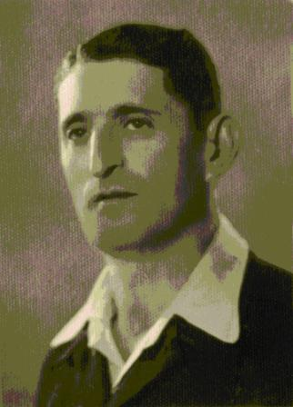 Arie (Leibel) Tabacay (Tabachendler) was born in Turisk in 1906. He attended the traditional "Cheider," Then studied in a modern "Yeshiva." Back in Turisk he joined the Zionist Socialist "Halutz" Pioneer Organization. He started his literary career while living in Turisk. He was active with the Zionist youth as he awaited documents of then Palestinian authorities. In 1935 he immigrated to Palestine and joined Kibbutz "Givat Hashlosha". He was a firm believer in the "Ber Borochov Doctrine to convert the structure of the Jewish peoples pyramid which was based on business class to a structure based on the working class and agriculture. As a pioneer he strived to be a model by changing his way of life and convince others to become farmers or workers in industry, etc.
The kibbutz decided that Tabacay become a longshoreman
at the new Tel Aviv harbor where he worked very hard. He continued his literary work in these conditions.
His first book of novels, Home and Sea, was published in 1941.
He was among the first to join the Hebrew Brigade". He served until the end of the Second World War in spite his age. He believed in self-fulfillment of the Idea.
The second book of novels was, A Full Life, was published in 1953.
Arie Tabacay continued to tell his stories. There was, The Hard Working Man and Farmer and The Longshoremen from Saloniki Always in the Center.
All of his characters were drawn from all the different layers of Israeli society. Arie Tabacay was a son of our Turisk Shtetl and knew from the inside about the intricacies and diversity of Turisk. He depicted them with great love for the Jews and their vibrant way of life.
Yohanan Tversky
Writer
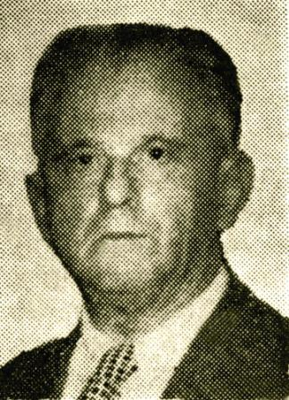 The Hebrew writer Yohanan Tversky was born in Turisk in 1901. His Grand father was the Rabbi Yaacov Leib (the Tversky family). His father Nahum Tversky was a Chassidic Rabbi in Warsaw and was killed by the Nazis during the Holocaust. Yohanan spent his childhood years in Turisk. When he finished the Yeshiva he vent to Warsaw. He studied at home with private teachers, according to the tradition of the Chassidic. He studied the holy books, languages, and other general studies.
While studying languages he was drawn to Hebrew and decided to speak to everyone only Hebrew! He was 17 years old during the First World War when he met Czechoslovakian officer, who was a prisoner of war and who taught him Ancient Greek and old Roman languages. In 1915 he entered the Hebrew high school in Odessa. When anti-Jewish riots started in the beginning of the First World War, the family left for shelter in Bessarabia. There he became a Hebrew teacher for the refugee children. He wrote stories in Yiddish and Hebrew and translated to Hebrew. In 192- he went to Berlin and studied religious philosophy as an academic student and aesthetics.
Continuing his met the poet Bialik in Berlin who supported him spiritually and financially. After finishing his studies he immigrated with mother and sister to the United States. He had a very hard time financially and adjusting to live in the USA. He was appointed lecturer in a seminar for women teachers in the "Tarbut" school in New-York. He studied at Harvard University and was appointed Professor of Israeli History. During that time he wrote mainly historical novels and biographies. For his book, "Alfred Dreyfuss" he was awarded the "LAMED" award. His best known works are, "The Virgin from Ludmir", "Uriel Dacosta", "Where is Ararat Land?", What I Choose". In 1945 he went to live in Israel. He was appointed editor of the publishing company "Dvir", There he continued his work until he died.
Zoosie Weinper
Poet and Writer
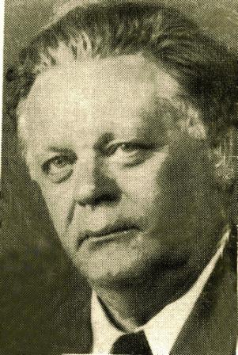 Zoosie Weinper was born in Turisk, in 1892. His father was the head Cantor in the court of Rabbi Leibenu. As a child he attended cheider in the Rabbi's court. As a teenager he studied in the Rovno and Brest Litovsk Yeshiva. At 16, while living far from his home he began secretly studying Russian language and literature and general studies. During this period he started to write short stories. Because of his urge and aspiration to advance and develop as a writer he decided to move to the cultural heart of Yiddish literature Warsaw. To earn a living he worked for several years and became a public school teacher. In 1913 his first poem written in Yiddish and published was, Dos Yiddishe Folk". After this his poems and stories were published in journals and periodicals.
In 1918 Z. Weinper editor of the monthly magazine, "The Beginning"(der onhoib"Yiddish) the center for the young generation of Yiddish writers and poets. The monthly was closed when Z. Weinper joined the Jewish battalion in the British army and left for Palestine. He served the army for 18 months then returned to the United States. For more than five months he published a literary periodical "By the Bonfire".
In the year 1920 a collection of his songs and poems were Published by the Bezalel publishing company in NewYork. The name of the collection, From Our Land" was dedicated to the memory of the Jewish soldiers who served in the battalion in Eretz Yisrael between March1918 and October 1919. The book was also dedicated to his beloved mother who perished in the Holocaust. In the year 1929 Z. Weinpert went for a literary tour of Europe. Thousands of fans attended the evening events where he read his works and gave lectures.
He spent more than a month with his mother and family in Turisk his home town that he loved. Turisk is at the heart of many of his works. While staying there he was approached by both the Zionists and Yiddish lowing Bundists. He was considered by both sides as a friend and companion. Z. Weinper was a very impressive poet and lecturer. While Yiddish was his mother language and the language of his creations he was an active and devoted Zionist. He was the one to bridge between the two "fighting" sides. During forty years of creativity he commemorated th ecultural pattern and life in our shtetl Turisk, the special Yiddish, and dreams destroyed forever in the flames of the Holocaust .
Yacov Yosef Wall
Writer, Publicist, and Critic
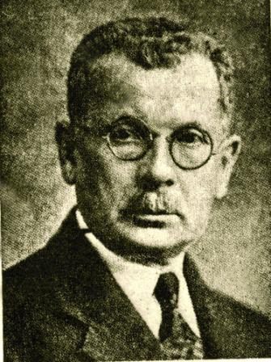 Y.Y. Wall was born in Turisk in 1870 in an Orthodox Chassidic community. His father was a "Cabalist" and Wall was educated in the Cabalist tradition. As a young yeshiva student he secretly began studying languages such as Russian, French and literature. He traveled and lived in several Jewish Shtetls in southern Russia. He finished college in Baku and in 1893 married and moved to Novgorod. There a group of active intellectuals was gathering and the famous poet and philosopher Feinberg joined them and Wall soon became one of Feinberg's closest collaborators and friend. He wrote several philosophical essays in Hebrew and Yiddish periodicals that caused debates in intellectual circles. Wall came back to Turisk as a teacher working in the Hebrew school. After one school term he went to Kiev and Baku. In Baku he founded a Hebrew school and taught the 12th grade. In 1920 he emigrated to the U.S.A. He was a scholar in Boston and New York where he taught at a Seminar for women teachers. There he was active unitl 1944 when he passed away. His first works were published in the Journals: "Hameliz and Azfira as well as some critical essays on literature.
Avraham Oyvental
Author
The author Avraham Oyvental was born in Turisk in 1903. He was the brother of the poet, Zisie Weinper. The family was Orthodox and his father was the head cantor in the synagogue of Rabbi Leibele of Turisk. As a young pupil he attended the "cheider" and continued in a Yeshiva. As a young Yeshiva student he began secretly studying general studies and foreign languages. As a very young student he began writing stories and tales. The stories he wrote were mainly for children and were very popular among the young pupils. In 1926, with the help of his brother, the poet Zoosie Weinper, he immigrated to the United States. He worked and studied and the successfully graduated from the Seminar for Yiddish teachers and became a teacher. He became a very prolific writer and was published in monthly journals of literature such as, Zukunft, Studio, tag, and "Kinder Journals." A. Oyvental started to collect his works, but sadly he did not survive to see his works published. He died in 1939, at the very young age of 33.